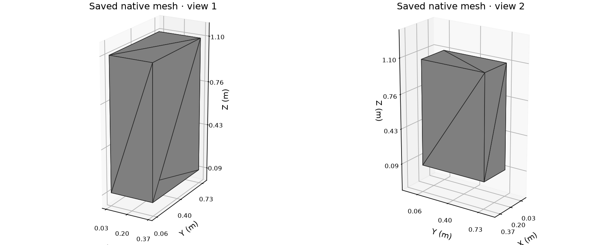

CLEAN-ROOM RVT RESEARCH · LOCAL TECHNICAL REPORTNew DirectShape: geometry read back from saved RVT
Owner 2746three native channels
36 / 12saved vertices / triangles
2,300source table rows byte-identical

| Channel | Root class | Body length | Read-back status |
|---|
| 101 | ElementHeader | 193 bytes | Complete bounded graph |
| 102 | DirectShape | 986 bytes | Complete bounded graph |
| 103 | GElement | 530 bytes | Complete bounded graph |
Actual scene.json vertices, normals and triangle indices; coordinates converted from feet to metres (× 0.3048). Triangle winding agrees with saved normals. Gray RGBA (0.498039, 0.498039, 0.498039, 1) is the reader’s initialized default viewport material, not a serialized material-property claim.
Evidence boundary: This is a Chrome screenshot of a generated local technical report, not Autodesk UI. DirectShape options, lifecycle defaults and the unchanged Global / no-registration policy remain hypotheses. Autodesk opening, regeneration and re-saving are untested. This is not ordinary IFC export: the public exporter skips DirectShape.
Verified candidate SHA-256: a971271cbc5eac80a471cd9498e5ae1dbe70d9baecd3e25a4145c28b5f912623
Scene report SHA-256: 59783548ef6b56d72a9bb8d1fffb55dcc4b6d91ea8030c1ca4d9d9721ebd6480